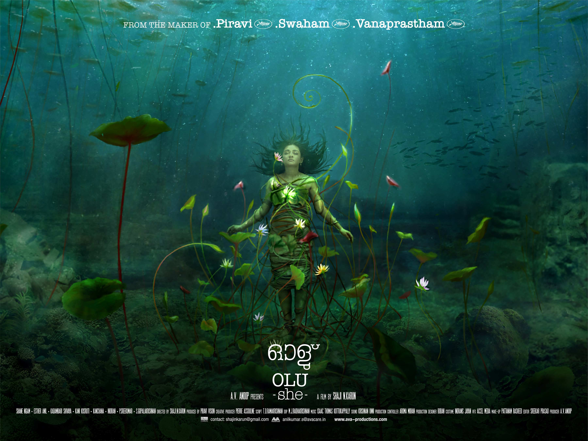
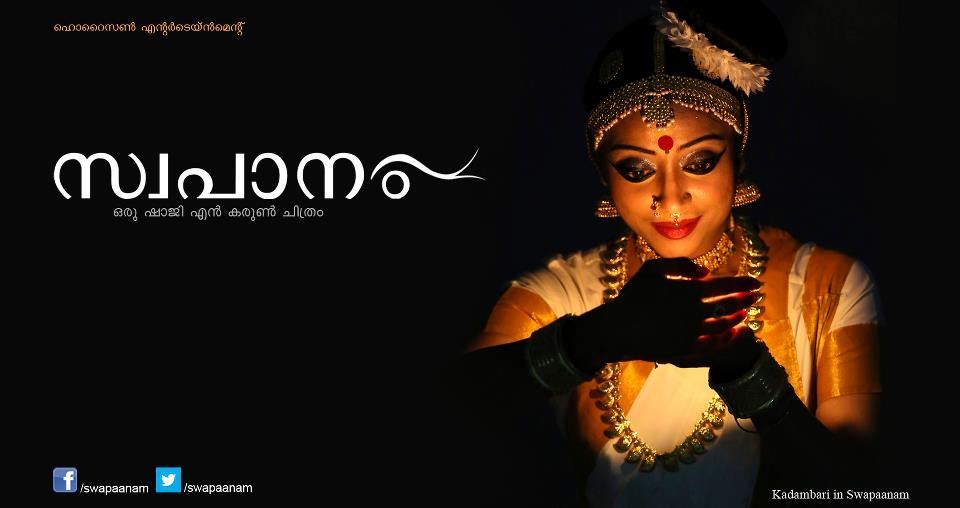
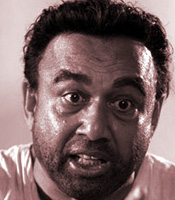
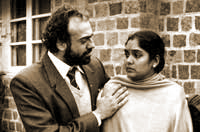
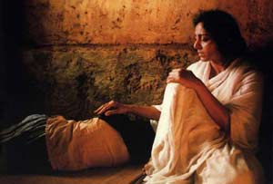
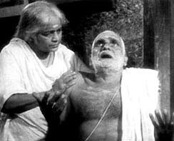
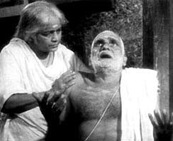

Olu (Long Film )
- ▼ Synopsis
-
“Olu” (She) is the tale of a Gypsy girl who mysteriously survives under the Kerala backwaters where she has been sunk by her rapists. Only during full moon nights, can she see the world above water. It is on such a night that she happens to ‘meet’ Vasu, a young untalented painter, rowing his boat. Out of love, she empowers him to create paintings that will change his life. But their contrasting inner visions of love may remain unbridgeable
- ▼ Cast and Crew
-
- Director Shaji N. Karun
- Cast Shane Nigaam, Esther Anil, Kadambari Shivayi, Kani Kusruti, Kanchana, Indrans, P. Sreekumar, S. Gopalakrishnan
- Writer T.D. Ramakrishnan
- Producer A.V. Anoop
- Creative Producer Pierre Assouline
- Cinematographer M.J. Radhakrishnan
- Editor Sreekar Prasad
- Art Direction Boban
- ▼ Director's Statement
-
She, “Olu”, can only conceive love between male and female as pure and transcendent. The film attempts to convey her perception of innocent feminine desires: spiritual and transcendental feelings as the simple ones derived from the fragrance of unknown native flowers.
“Olu” is a film around man and water. Water is the perfect media to perceive life’s beliefs and mysteries... It is visible and obvious in any part of the world. All religions, Christianity, Hinduism, Buddhism, etc. have different significances in their approach to the energy of water.
“Olu” is a story on Moksha (liberation from earthly life) where water and its concept of pure love represent the female principle. Kerala is the perfect set, a land having many beautiful backwater islands where the people live in celebration on their ‘abode of water’ with mysteries, love and ethos. In “Olu”, I use the idea of Water as a metaphor for spirituality. The sound and sight of water at different moments of my life always fascinated me. I believe water is an element of unity for mankind. So is Cinema.
- ▼ Production Context
-
In Kerala, the small southern state of India, we make over 120 films per year and it is increasing every year because of easy access to Digital equipment. Most of those films by new filmmakers are influenced by the Hollywood and Bollywood concept of cinema as entertainment only. The depth and beauty of simple human life are gradually becoming forgotten themes for regional language cinema. Kerala is blessed with many backwaters and lakes. We have found that not many stories have been told in cinema based on those fascinating backwaters of Kerala. Images of the Kerala backwaters and landscape are powerful to express the local yet universal Cinema dialect of love and awareness. This has been in my mind as a cinematographer for several years. Olu is my attempt to understand that physical and spiritual realm through my images.
Gaadha (Long Film, Pre-production)
- ▼ Synopsis
-
Can anyone say that Fifty years is the right age to die? It seemed as if mother had a premonition of her impending death. That probably was the reason why she forcibly sent my father to bring me to her side.
When my father came five days ago; I was in the College hostel in Darjeeling. It was summer holidays and I had just completed my graduate studies…! “No I am not coming” … Wasn’t I one who was the dearest to her once...? Her only child. ..When did my father distance himself from my mother? When did I - most beloved - go far away fromher.10 years have gone ,rather quickly, since I had seen my mother!
I entered the bedroom, she was looking at the beautiful golden sun which was about to set. All of a sudden, I felt years rolled back and myself becoming her darling child once again. Mother pulled me even closer and it felt just like it was when I was a little child long time back. It felt like a very long time ago... She began running her fingers through my hair. She gave me seven diaries… ten years of her handwritings after I withdrew from her.
“I never could understand anything... anything at all...But then Poetry and Music were never my interests either.... No, nothing was intentional...” I did not say a word. I was thinking about my mother who always had dreams about the Sea....but she never saw the Sea till her death...... but imagining the Sea was her strength to embrace music….
Mother broke her silence “My life has always been an open book. I haven’t done anything that I have considered wrong.… Still.... Your father who ought to know this more than anyone else....” She suddenly became silent. Poetry, music and love were reflected on those notes. The diary mentioned her life in Banaras also, where she met her husband through an arranged marriage.
One day (when I was three) mother wrote ....“ I never expected this. Breaking into my drawer, behind my back... looking into my papers... my letters...I cannot understand why...? The person I loved and placed my trust on... my husband...Why do this without my knowing? He could have asked me direct! - Who is the person who writes to you?”
Then after a few days interval (There was no entry in the diary during these days). My husband asked me whether you were living like husband and wife in Benares... For your peace of mind I shall give you the answer, no; we were not living as husband and wife, nor as lovers. He was my guru and I was his favorite disciple. We loved each other; our love was as deep as any other for my Music… like your love for your God, …is there any physical delight in it?..even if you are silently craving for it ! Mother’s diary almost ended here.
Mother died yesterday morning’- Tears were brimming inside me. Can anyone say that fifty years is the right age to die? The last two days, the note in the diary ends without completing sentences. The letters were written without clarity. The third day after mother’s funeral, father came to me and sat by my side. We spoke nothing for a long time, finally like freeing his mind of a heavy burden; he said “Her guru died a month back”. He kept talking. “I never could understand anything... anything at all.. But then Poetry and Music were never my interests either....
No, nothing was intentional...”
▲hide - ▼ Cast and Crew
-
- Director Shaji N. Karun
- Cast Mohanlal , Kadambari
- Music Composer Zbigniew Preisner
- Art Director Thotta Tharani
- Editor Sreekar Prasad
- Writer Anjum Rajabali
- Co-writer and Dialogue Harikrishnan
- Line Producers Murali Menon, Sudhir
- Co-producers Phillipe Avril, Hugh Welchman, Wahida Ada, Srini Vasan
- Producer Shaji N. Karun, Muralidharan
- Polish Co-production partner Breakthru Films, Poland
- French Co-production partner Unlimited Films, France
- Production Company Boston Media Works
▲hide - ▼ Director's Statement
-
Music is a miracle, where enchantments attain silence. Such mystery is also an important sensation to understand the beauty of human life. We miss such kind films in our time.
Indian music is one of the oldest and longest types of Music. To many Indians, music is strangely intertwined into their life and they habitually live in a tradition of music that interweaves all through their life cutting across meta physical and physical expressions including that of ‘solitude’ and ‘openness’.. The mother and the daughter in my film ‘Gaadha’ also deal with their emotions that underline the subtleties of silence- The Music.
It is a film of human being’s relationship that is translated through their convictions on Music. It is a story on individual arrogance and chaste love related with their insight. My film is an attempt to observe the delicate minds of a mother and daughter where the father becomes incapable of recognizing their music and their passions. When they fall apart for many reasons, it is the same music that bonds them together without vacuum.
For the first time in the Indian film history, this film will explore the South Indian and North Indian classical music intermingling on a path breaking platform of Opera and symphony. The film explores different moods of the musician using the metaphor of Sea with its ever changing color, splendor, beauty and the force.
▲hide
Swapaanam
- ▼ Synopsis
-
The rhythm of life, even for a master drummer, can be disrupted as well as harmonised by love, passion, jealousy, hate and spite. Unni, a masterful chenda (a drum) player, is drawn to dancer Nalini by an intense force that transcends their devotion to the arts. However, their passion cannot hold up against the tumults in Unni’s life, all of which hasten a mental imbalance, rooted in Unni’s childhood, to an inevitable dark end.
- ▼ Cast and Crew
-
- Director Shaji N. Karun
- Producer M.Rajan, Horizion Entertainment
- Starring Jayaram, Kadambari, Lakshmi Gopalaswami, Vineeth, Siddique, Suresh Kurup, Udayan Namboothiri, P.D Namboothiri, Eeswaran, Sajitha Madathil, Aswini
- Director of Photography Saji Nair
- Editor Sreekar Prasad
- Music Director Sreevalsan J Menon
- Story, Screenplay and Dialogue Shaji N. Karun, Hari Krishanan and Sajeev Pazhoor
- ▼ Trailer
Waiting (Short Film)
- ▼ Synopsis
-
We wait for trains, auspicious time, the promising moment, decisions of others, kind destiny, and the flow of the tide. Often there is no alternative. One waits out the ideas and the moods; one waits to catch one's breath, or to digest a good work of creation or an experience. The film is on the reflections, thoughts, judgements, beliefs, opinions of many people from Kerala, and the different pursuits of their lives.
▲hide
Pollution Control (Series of short films)
Kutty Srank (Long Film)
- ▼ Synopsis
-
Three women come to a police station to identify a dead body. It is said to be Kutty Srank, a boatman who lived a versatile life. All three women claim to be his loved one. Their memories of their time with him paint a picture of his multifaceted character and personality. The story is told in the style of magical realism. Thus a world of its own emerges in which reality and fiction seem to fuse.
▲hide - ▼ Awards and Film Festivals
-
- Best Film, National Film Awards 2009, India
- Participation in more than 45 International film festivals, including Montreal, Pusan South Korea, Dubai, New York ( SEAIFF) Innsbruck, Goa, Mumbai, Rotterdam , Hawaii etc.
▲hide
AKG (Short Film)
- ▼ Synopsis
A short docu-fiction by Shaji Karun, AKG zooms in on the life and times of A.K. Gopalan, one of the pioneers of the communist movement in Kerala and a messiah to the poor and the downtrodden.
A K Gopalan, who was the leader of the opposition in the parliament, had a vision that encompassed the welfare of the ordinary people and the proletariat class. The film presents slices from AKG's life blended with a voice-over narration where AKG tells his own story.
▲hide
Moving Focus (Short Film)
Nishad (Long Film)
- ▼ Synopsis
1971- The Atmosphere is tense with the possibility of a war between India and Pakistan. Sati, a music teacher in a school for Tibetan children run by the Tibetan government-in-exile and her husband Gopi, a doctor in a government hospital is leading a placid life. Their only son, Ashok is a pilot with the Indian Air Force, and calls home at an appointed time, unerringly every week. Ashok's call itself gives Sati immense joy and its regularity brings her great comfort. But a mistaken call from a young boy trying desperately to reach his mother 'Gomati amma' disrupts the peace and tranquility of their home. The wrong calls keep coming. Each time, it is the same child's voice; the desperation in the voice is more sharply etched. Sati finds herself a prisoner to her own mental demons. Her anguish grows as her son's call doesn't arrive at the appointed hour. The next call is curt and brief. "The child passed away. The funeral is tomorrow....."
▲hide- ▼ Film Festivals
-
- Premiered at Fukuoka film festival and featured at 10+ other international film festivals
- Selected for Indian Panorama, International Film Festival of India 2002
▲hide
Big Man& Small World (Short Film)
G.Aravindan (Short Film)
Vanaprastham (Long Film)


- ▼ Synopsis
Southern India, 1930's, Kunhikuttan is the son of a low caste woman, Baghi, a servant to Namboothiri, the Lord of the manor. She suspects that Namboothiri is Kunhikuttan's father, but she refuses to reveal the truth to her son. At age 10, Kunhikuttan begins the long and arduous apprenticeship of Kathakali, a revered ancient art that combines pantomime, opera, and dance. After some years, Kunhikuttan's talent is widely recognized. The pain of now knowing his father and being forced by Namboothiri into an unhappy marriage, is seen in the power of his enigmatic performances. One night, the beautiful Subhadra comes to see Kunhikuttan dance the legendary saga, the Mahabarata. Married into the closed world of high society, Subhadra can no longer distinguish between reality and fiction. She becomes consumed by her passion for the hero of the Mahabarata, and falls in love, not with Kunhikuttan, but with Arjuna, whom he embodies on stage
▲hide- ▼ Awards and Film Festivals
-
- Selected already for more than 40 International Film Festivals- Munich, London, Hawaii, Croatia, Innsbruck, Taipei, Pusan, Wales, American Film Institute, Malta Plata, Flanders, Fukuoka etc.
- First Indo-French production from South India. The film was released all over Europe in over one hundred regular theatre.
- The Best Feature Film 1999 (Gold Medal from The President of India)
- Best Actor- National Film Festival of India (Mr. Mohan Lal)
- Best Editor- National Film Festival of India (Mr. Sreekar Prasad)
- Best Film- Kerala Film Critic
- Best Director- Kerala State Film Award 99 : Best Actor, Best Sound Recording, Best Make up, Best Costume, Best Editing, Best Cinematography
- Special Jury Prize, 19th Istanbul International Film Festival 2000
- FIPRESCI Award for Best Film at 3rd Mumbai International Film Festival
▲hide
Bhavam (Short Film)
Sham's Vision (Short Film)
Swaham (Long Film)

- ▼ Synopsis
Swaham sketches the plight of a widowed mother and her children whose small coffee-shop no longer returns enough income to feed the family. The family of Ramayyar holds a small coffee shop in an isolated village. Ramayyar, an affectionate husband, dies in an accident. His wife Annapoorna, only finds herself with two children.
After her husband's death, Annapoorna's life rocks in the black and white, with time, and sometimes the colour of her life returns - the time of happiness - through her memories. Her son must find work, but one needs money "to buy" a promise of employment. Her daughter is still young, full with the unconcern of the children, vis-a-vis with a misfortune which really does not touch them. They are likely to be expelled from their house by their owner, who needs money to marry his daughter off - the dowry -, always the dowry! Then, she is forced to go up the soapy slopes of life, and to resist the anaesthesia of the happy memories. Will the colours of her life return or the black will end up devouring the white?
▲hide- ▼ Awards
-
- Selected more than 30 International Film Festival.
- Best Film from Innsbruck Film Festival Austria.
- Second Best Film Bergamo Italy.
- Outstanding Film- Hong Kong International Film Festival.
- Best Director-Kerala State Film Award.
- Best Direction: Special Jury Award- President of India.
- A number of other Awards instituted by Government of Kerala, the Cultural, Associations and News Journals, Dailies etc.
▲hide
Piravi (Long Film)
 

- ▼ Synopsis
-
In a little village in the state of Kerala in South India, a frail but dogged old man Chakyar (Premji) waits in hope for his missing son Raghu to return. Raghu had disappeared the month earlier during a political demonstration banned by the 'State of Emergency.' In the hope of news, the old man goes daily by boat to the pier, which is the terminus for the bus that runs daily between his village and Trivandrum, and waits patiently at the bus stop for Raghu's return. Learning of the boy's arrest, he goes to Trivandrum to meet the Home Minister, once his student. He returns to the village reassured that his son will eventually return. The man's daughter (Archana) however doesn't share her father's optimism and through her own investigation learns that her brother probably died in police custody after being tortured but she cannot bear to tell her father who continues to hope and search. However the old man's grip on reality is slipping fast and he starts dreaming his son is with him.
▲hide - ▼ Cast and Crew
-
- Starring : Premji , Archana, Lakshmi Krishnamoorthy, C.V. Sreeraman, Mullenezhi, Gopalakrishnan
- Story: S. Jayachandran Nair
- Screenplay : Shaji N Karun, S. Jayachandran Nair, Ragunath Paleri
- Audiography: Krishnanunny
- Art Direction: Devan
- Editing: Venugopal
- Cinematography: Sunny Joseph
- Music: G.Aravindan
- Produced by: Film Folk
- Directed by: Shaji N Karun
▲hide - ▼ Awards
-
- Sir. Charlie Chaplin Award (The inaugural one).
- Special Mention, Camera D'Or Cannes 1989.
- Grand Jury Prize (Silver Leopard) , Locarno Film Festival.
- Best Films from National Film Awards India 1989
- Out standing Film -- London film festival.
- Silver Hugo- Chicago
- Second Best Film- Bergamo Italy
- Ecumenical Award Switzerland
- Best Films from b) Fajar, Iran c) Fribourg- Switzerland d) Hawaii USA etc..
- A number of other Awards from Italy, Vienna, USA, India, Kerala State, Critics etc.
▲hide
Kannikal (Short Film)
Kerala Carnival (Short Film)
Wild Life of Kerala (Short Film)
Genesis